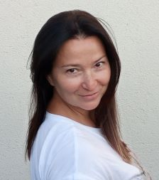

UA
Experience
Interpreter/Translator
General information

Larysa Bondarenko
Ukraine
Contacts and social networks
Experience
2001 – currently
Interpreter/Translator
- interpreting and assistance to international election observation missions:
- Canadian Bilateral Observation Mission:May, 2014;
- Parliamentary elections, October, 2014;
- the ENEMO Mission in Ukraine: LTO Interpreter/Assistant:
- interpreting for international observers during Presidential,
Parliamentary and local mayor elections
09/2020 – 06/2021
Instructional Designer/Course Developer
The U.S. Peace Corps in Ukraine, Ukraine
-Developing the following on-line courses at the Moodle platform for Peace Corps Learning Space:
“Ukrainian Language Basics”,
“Introduction to Youth Development Logical Project Framework”,
“Introduction to Teaching English as a Foreign Language”
04/2014 – 10/2015
Language expert, copywriter, rewriter
“InReado” company, Ukraine
- developing language materials for an on-line English language learning course;
- designing, testing and revising an on-line English language learning course for the novice and intermediate levels;
- writing, rewriting, adaptation of articles of general interest in English to facilitate the English language learning;
- developing guidelines for adaptation.
Education
1996 – 2001
Master’s degree, English and German Philology
Bohdan Khmelnytskyi State University in Cherkasy, Ukraine
Training and Certificates
- 19/08/2021 – 20/08/2021
Online Youth Employment Training
American Council
- 12/10/2020 – 16/10/2020
Online training “TOP-30 games for a ZOOM teacher”
International online school “Papagolik”
- 28/09/2020 – 02/10/2020
Online training on Positive Youth Development
Peace Corps Ukraine, USAID